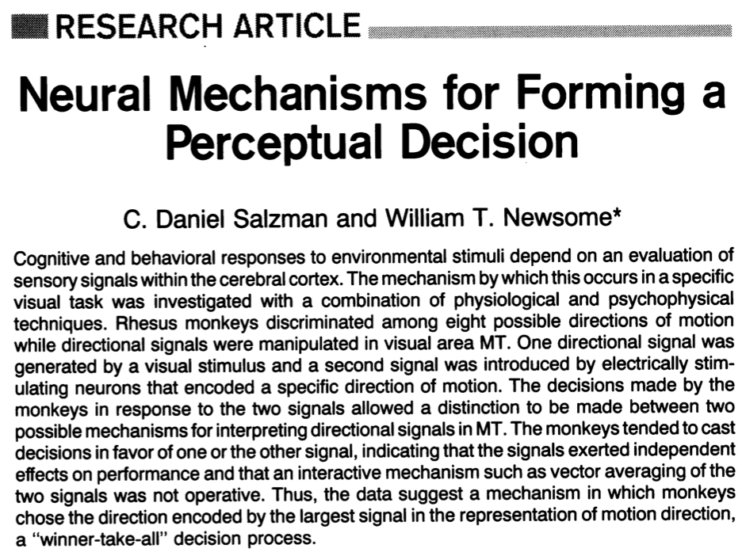
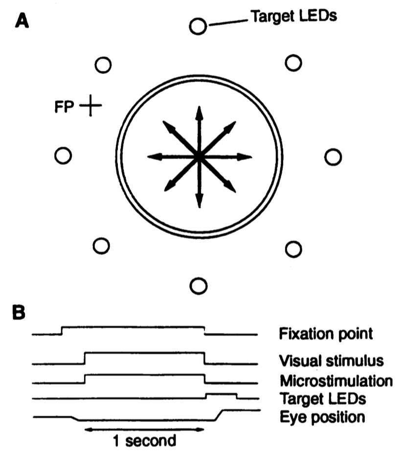
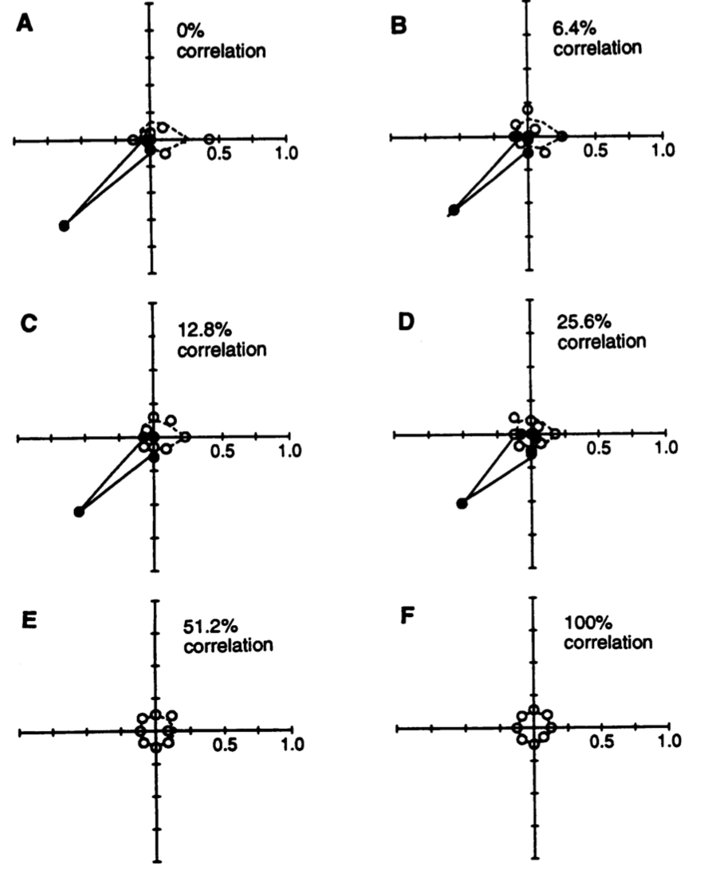
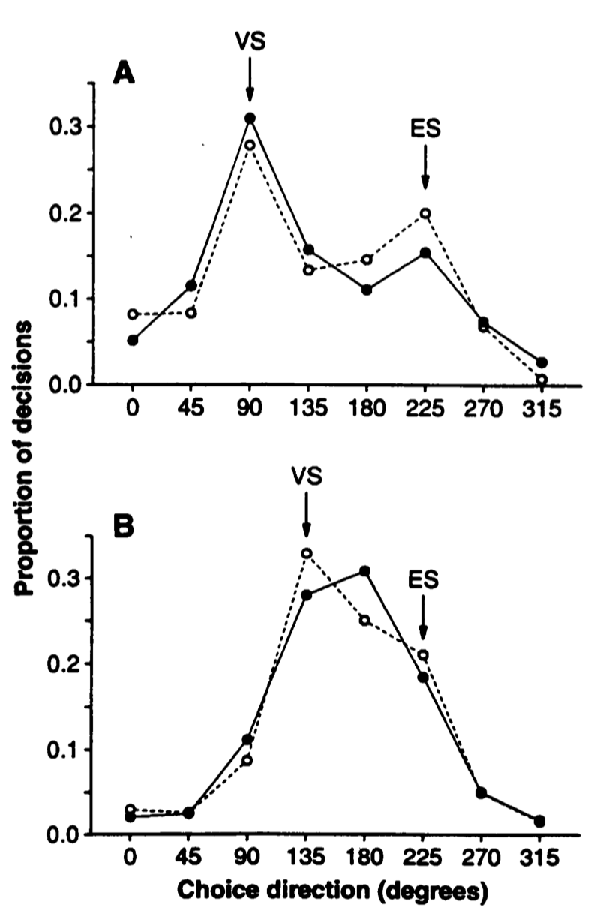
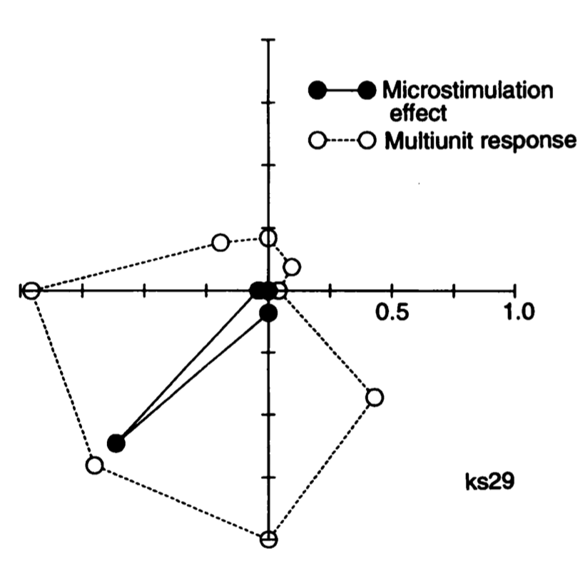
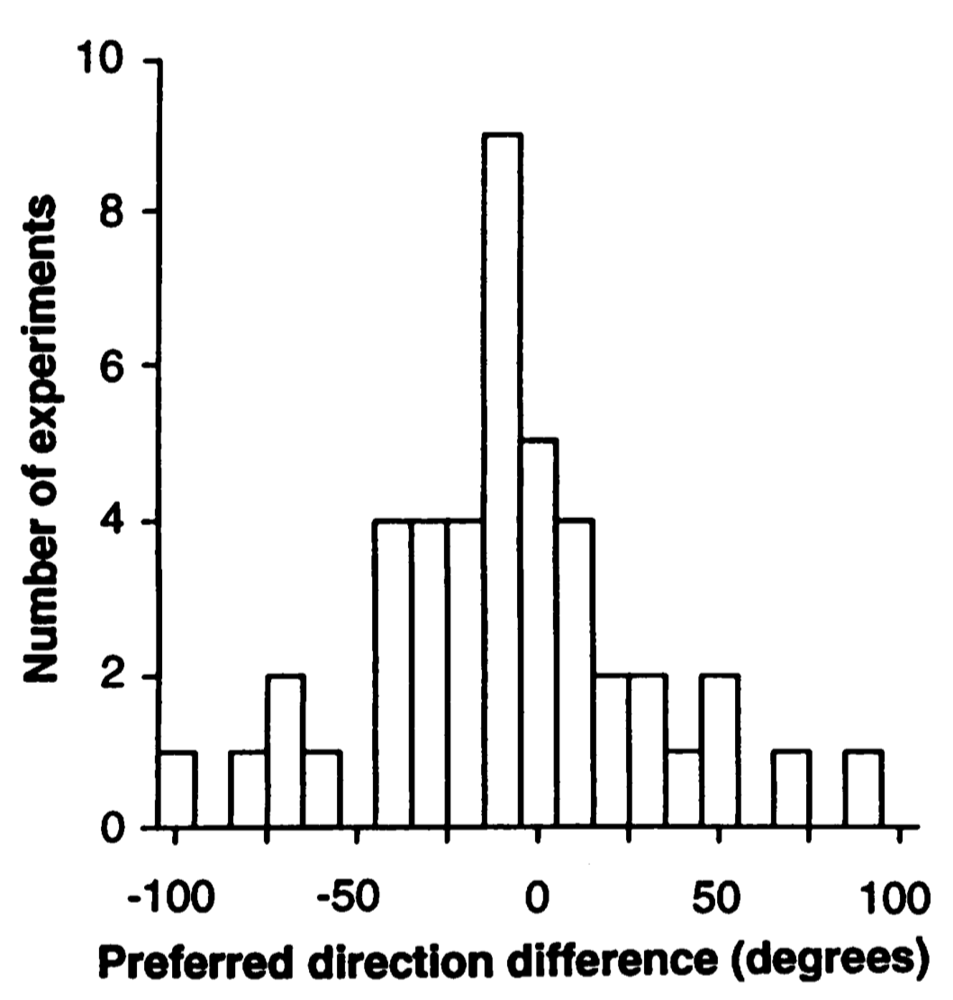
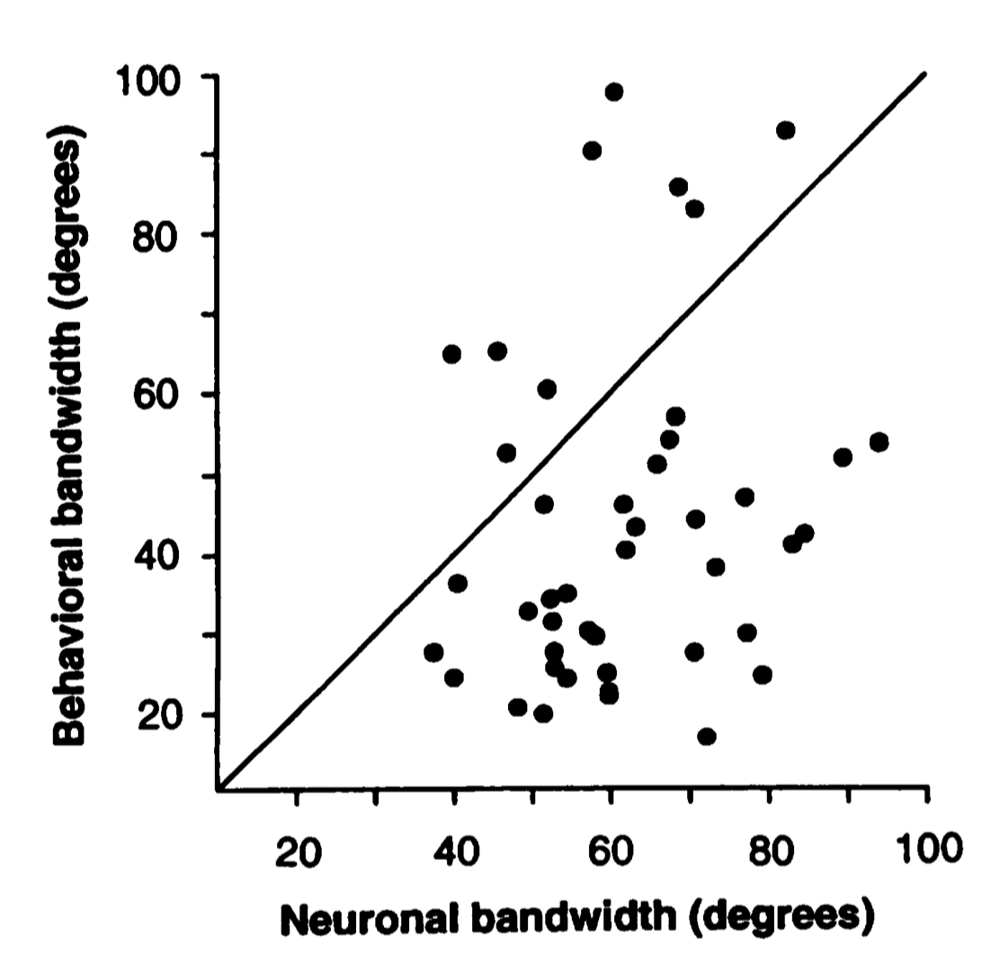

<!doctype html>
<html lang="en">
<head>
    <meta charset="utf-8">
    <title>Salzman and Newsome, Science, 1994</title>
    <link rel="stylesheet" href="../dist/reveal.css">
    <link rel="stylesheet" href="../dist/theme/black.css" id="theme">
    <link rel="stylesheet" href="../plugin/highlight/monokai.css">
</head>

<body>
    <div class="reveal">
      	<div class="slides">
                <!-- Slides are separated by newline + three dashes + newline, vertical slides identical but two dashes -->
                <section data-markdown data-separator="^\n---\n$" data-separator-vertical="^\n--\n$" data-separator-notes="^Note:" >
                    <script type="text/template">
                        ## Salzman and Newsome, Science, 1994
                        

                        Note:
                        <button class="navigate-prev"><</button> | [Home](https://www.maxpensack.com/) | [Presentations](https://www.maxpensack.com/presentations) | <button class="navigate-next">></button>

                        This is a work-in progress, but I hope to create some stand-alone narrative slide decks to walk through select papers I'm reading.

                        ```Press 'O' key to navigate through all slides.```

                        ---

                        ## Figure 1
                        

                        Note:
                        <button class="navigate-prev"><</button> | [Home](https://www.maxpensack.com/) | [Presentations](https://www.maxpensack.com/presentations) | <button class="navigate-next">></button>

                        ```Press 'O' key to navigate through all slides.```

                        ---

                        ## Figure 2
                        

                        Note:
                        <button class="navigate-prev"><</button> | [Home](https://www.maxpensack.com/) | [Presentations](https://www.maxpensack.com/presentations) | <button class="navigate-next">></button>

                        ```Press 'O' key to navigate through all slides.```

                        ---

                        ## Figure 3
                        

                        Note:
                        <button class="navigate-prev"><</button> | [Home](https://www.maxpensack.com/) | [Presentations](https://www.maxpensack.com/presentations) | <button class="navigate-next">></button>

                        ```Press 'O' key to navigate through all slides.```

                        ---

                        ## Figure 4
                        

                        Note:
                        <button class="navigate-prev"><</button> | [Home](https://www.maxpensack.com/) | [Presentations](https://www.maxpensack.com/presentations) | <button class="navigate-next">></button>

                        ```Press 'O' key to navigate through all slides.```

                        ---

                        ## Figure 5
                        

                        Note:
                        <button class="navigate-prev"><</button> | [Home](https://www.maxpensack.com/) | [Presentations](https://www.maxpensack.com/presentations) | <button class="navigate-next">></button>

                        ```Press 'O' key to navigate through all slides.```

                        ---

                        ## Figure 6
                        

                        Note:
                        <button class="navigate-prev"><</button> | [Home](https://www.maxpensack.com/) | [Presentations](https://www.maxpensack.com/presentations) | <button class="navigate-next">></button>

                        ```Press 'O' key to navigate through all slides.```

                        ---

                        ## Summary

                        Note:
                        <button class="navigate-prev"><</button> | [Home](https://www.maxpensack.com/) | [Presentations](https://www.maxpensack.com/presentations) | <button class="navigate-next">></button>

                        ```Press 'O' key to navigate through all slides.```
                    </script>
                </section>
    	</div>
    </div>

	<script src="../dist/reveal.js"></script>
    <script src="../plugin/markdown/markdown.js"></script>
    <script src="../plugin/highlight/highlight.js"></script>
    <script src="../plugin/notes/notes.js"></script>
    <script src="../plugin/math/math.js"></script>
    <script>

      Reveal.initialize({
        controls: true,
        progress: true,
        history: true,
        center: true,
        showNotes: true,
        slideNumber: 'c/t',

        plugins: [ RevealMarkdown, RevealHighlight, RevealNotes, RevealMath ]
      });

    </script>
</body>
</html>

<style>
    #left {
    margin: 10px 0 15px 20px;
    text-align: center;
    float: left;
    z-index:-10;
    width:48%;
    font-size: 0.85em;
    line-height: 1.5;
    }

    #right {
    margin: 10px 0 15px 0;
    float: right;
    text-align: center;
    z-index:-10;
    width:48%;
    font-size: 0.85em;
    line-height: 1.5;
    }
</style>